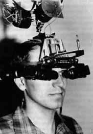
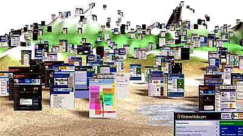
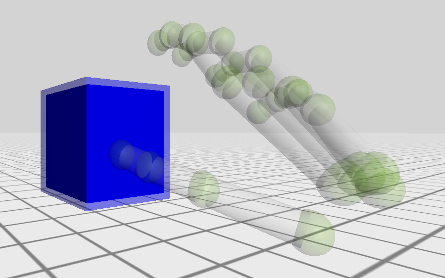
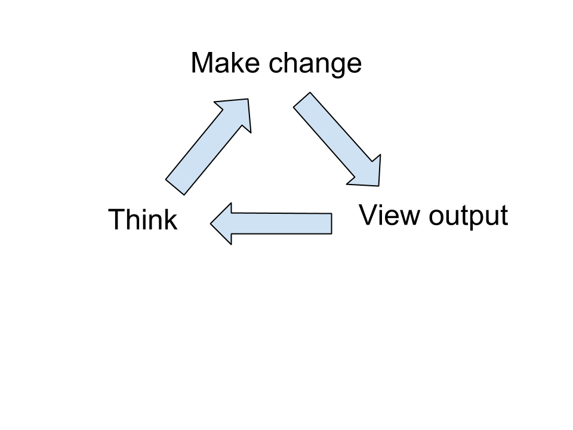

class: center, middle # Virtual Reality in Software Engineering: ## Affordances, Applications and Challenges Anthony Elliott* Brian Peiris Chris Parnin* .footnote[.right[*North Carolina State University, USA]] ??? Our research describes the application of Virtual Reality to Software Engineering but, before we dive into the paper's specifics, we'd like to give you a primer on the history and future of Virtual Reality. --- name: ppp # VR: Past, Present, Future .leftColumn[  <br> __1965__ ] .rightColumn[ <img src="images/rift.jpg" width="100%"> <br> __2012__ ] .bottom[ <img src="images/facebook.png" width="10%"> <img src="images/microsoft.jpg" width="30%"> <img src="images/google.png" width="25%"> <img src="images/sony.jpg" width="25%"> ] ??? Maybe add slide for just the companies in VR right now. Could add a logo or something from each company to the slide. --- # Demo - Programming is limited --- # Demo - Virtual reality can help ??? appeals to 3D developers people will question if VR can help in non-gaming applications --- name: improves # VR improves on --- # VR improves on - Spatial Cognition  ### VR provides: - stereoscopic vision - head rotation -- ### Effect - activates *place cells* - should improve memory, attention, and cognition (Parnin 2012) --- # VR improves on - Manipulation and motion .leftColumn[ ### VR provides: - direct manipulation - walking ] .rightColumn[ <br> <img src="images/cyberith.jpg" width="50%"> ] ??? Visuals - hand in scene - Cyberith --- # VR improves on - Manipulation and motion .leftColumn[ ### VR provides: - direct manipulation - walking ### Effect - improve perception and retention (Noyes, 2008) - Walking stimulates creativity (Oppezzo, 2014) - improves sensation of depth (Held, 1963) ] .rightColumn[ <br> <img src="images/cyberith.jpg" width="50%"> ] --- # VR improves on - Feedback ### VR provides: - Overcoming the *Gulf of Evaluation* (Norman, 1988) - VR makes it easier to see what's going on  -- ### Effect - Increased productivity --- # How can VR help developers? .leftColumn[ - Debugging ] .rightColumn[ <img src="images/debugger-canvas.png" width="95%"> ] --- # How can VR help developers? .leftColumn[ - Debugging - Simulation ] .rightColumn[ <img src="images/debugger-canvas.png" width="95%"> ] --- # How can VR help developers? .leftColumn[ - Debugging - Simulation - Visualization ] .rightColumn[ <img src="images/debugger-canvas.png" width="95%"> ] --- # How researchers can help ??? There are still some big questions that would benefit from research. -- .leftColumn[ <br> 1) Immersive visual programming language ] .rightColumn[ <img src="images/scratch.jpg" width="95%"> ] ??? Like Scratch - education --- # How researchers can help .leftColumn[ 1) Immersive visual programming language .bottom[ 2) Immersion vs physical interaction ]] .rightColumn[ <img src="images/scratch.jpg" width="95%"> <img src="images/hololens.jpg" width="95%"> ] ??? How can software engineers immersed in a virtual environment instruct the computer on what to do? Voice? Gestures? Text? Visuals - HoloLens - Scratch --- # VR development resources - Unity - Unreal - WebVR --- # Recap .leftColumn[ - commodity hardware - current development limitations - VR can improve - Spatial cognition - Manipulation and motion - Feedback ] .rightColumn[ <img src="images/riftsketch.png" width="95%"> ] .bottom[ Poster: Thursday 4 - 5:30 pm ] ???